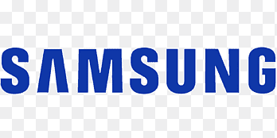

Nos services en climatisation & pompes à chaleur
Installations, études, dimensionnement, maintenance et dépannage. AUDIT CONSEIL ENVIRONNEMENT vous accompagne sur tout le cycle de vie de vos équipements.
Nos partenaires historiques



Nos services en climatisation & pompes à chaleur
AUDIT CONSEIL ENVIRONNEMENT vous accompagne sur l’ensemble du cycle de vie de vos installations : de l’audit initial jusqu’à la maintenance, en passant par les études, le dimensionnement et la mise en service.
Un accompagnement complet, étape par étape
Nos interventions sont structurées pour sécuriser votre projet, optimiser les performances et garantir la fiabilité de vos équipements, que vous soyez un site tertiaire ou un particulier.
1. Audit & diagnostic
Relevés sur site, analyse de l’existant (climatisation, pompes à chaleur, ventilation), vérification de l’état des équipements, de la conformité et des contraintes réglementaires.
2. Études & dimensionnement
Calculs de charges, choix des puissances, typologie de systèmes (air/air, air/eau), implantation des unités et préconisations techniques adaptées à votre activité et à votre bâtiment.
3. Suivi de projet & mise en service
Accompagnement des installateurs, contrôle de la bonne mise en œuvre, réglages, mise en service et vérification des performances réelles sur site.
4. Maintenance & optimisation
Mise en place de plans de maintenance, visites périodiques, contrôles de performance, conseils d’optimisation énergétique et accompagnement en cas d’évolution de vos besoins.
Types d’interventions
Nous adaptons nos prestations selon votre profil et l’usage de vos locaux.
Tertiaire & professionnels
• Confort thermique pour bureaux, commerces, hôtels et restaurants
• Traitement d’air pour cabinets médicaux, laboratoires, établissements de santé
• Refroidissement de locaux techniques, salles serveurs et petites industries
• Contrats de suivi et d’optimisation énergétique pour les sites sensibles
Objectif : garantir confort, continuité de service et maîtrise des coûts d’exploitation.
Particuliers
• Étude et choix d’une climatisation réversible adaptée à votre logement
• Pompes à chaleur pour le chauffage et la production de confort
• Vérification d’installations existantes avant travaux ou rénovation
• Conseil d’usage pour limiter la consommation et prolonger la durée de vie du matériel
Objectif : un confort maîtrisé toute l’année, avec des équipements bien dimensionnés et bien réglés.
Exigence de qualité & zones d’intervention
Nous privilégions des équipements reconnus pour leur fiabilité et leurs performances, en collaboration avec vos installateurs et partenaires habituels.
• Études et accompagnement réalisés depuis Dreux (28), avec interventions fréquentes sur
l’Eure-et-Loir, les Yvelines et Paris (75).
• Possibilité d’intervenir en Île-de-France élargie selon la taille et la nature du projet.
• Pour les projets tertiaires importants, une étude spécifique de la zone d’intervention est possible.
Vous avez un projet en dehors de ces secteurs ? N’hésitez pas à nous consulter pour vérifier la faisabilité d’une intervention.
Parlons de votre projet
Un échange de quelques minutes permet déjà de vérifier la faisabilité, d’orienter les choix techniques et de définir les prochaines étapes.
Vous êtes un professionnel ?
Bureaux, commerce, établissement de santé, salle serveur, petite industrie… Transmettez-nous quelques informations (type de site, surface, usage), et nous revenons vers vous.
Exemple de message : « Nous avons un projet de climatisation / PAC pour un site tertiaire de XX m², pouvez-vous me rappeler pour en discuter ? »
Vous êtes un particulier ?
Projet de climatisation réversible, pompe à chaleur ou optimisation d’une installation existante : un conseil indépendant vous permet d’y voir plus clair avant de vous engager.
Exemple de message : « Je souhaite installer / faire contrôler une climatisation chez moi, pouvez-vous me rappeler pour un premier avis ? »